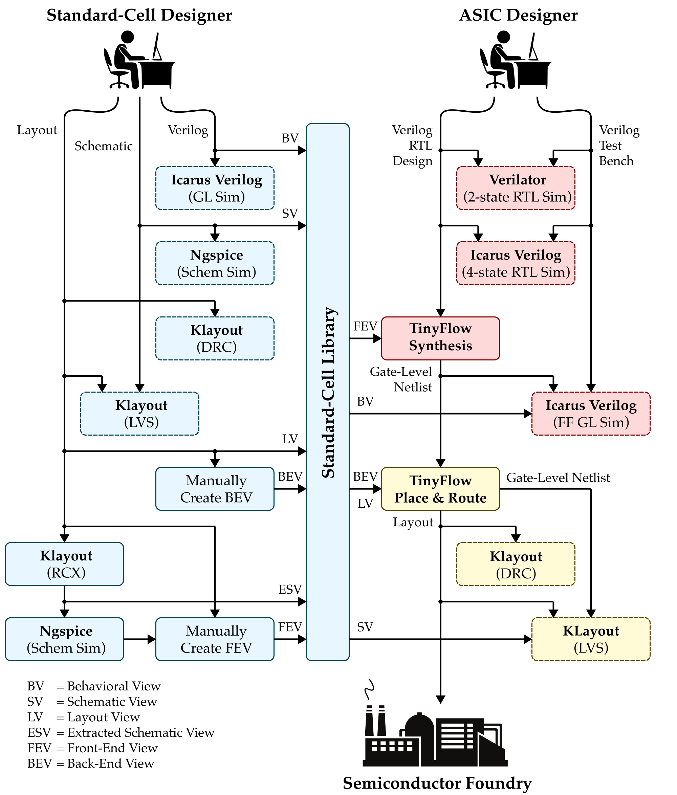
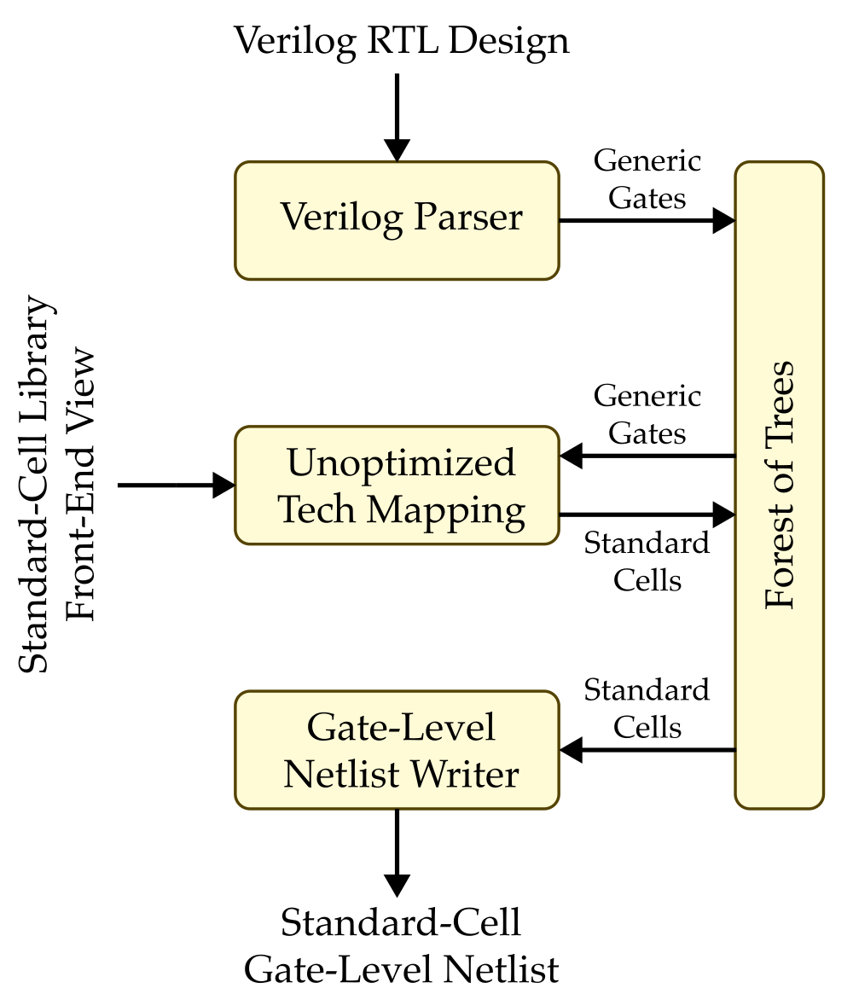
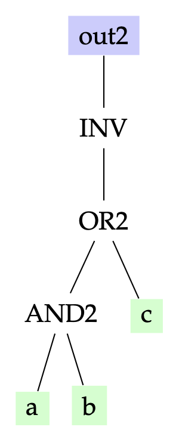
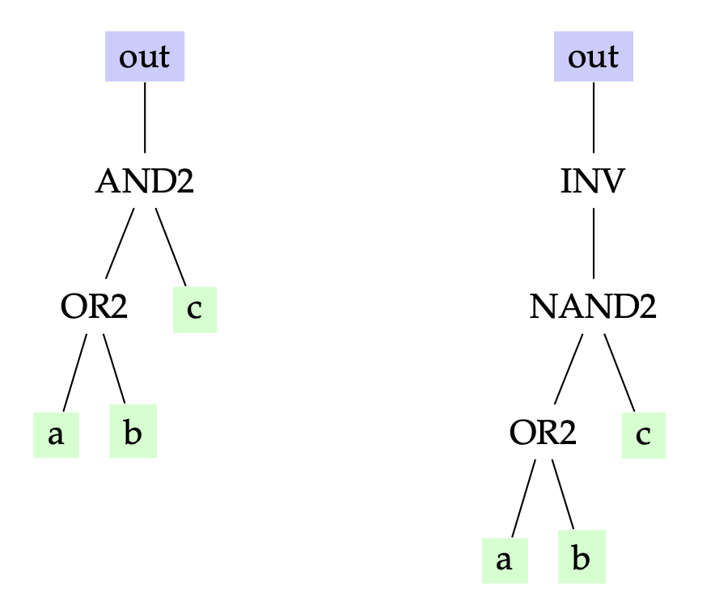
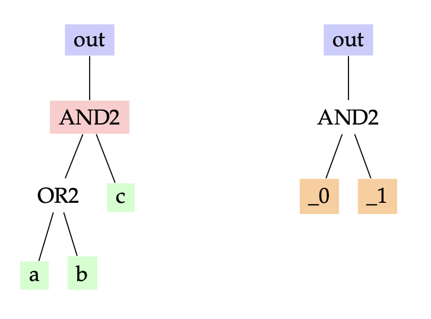
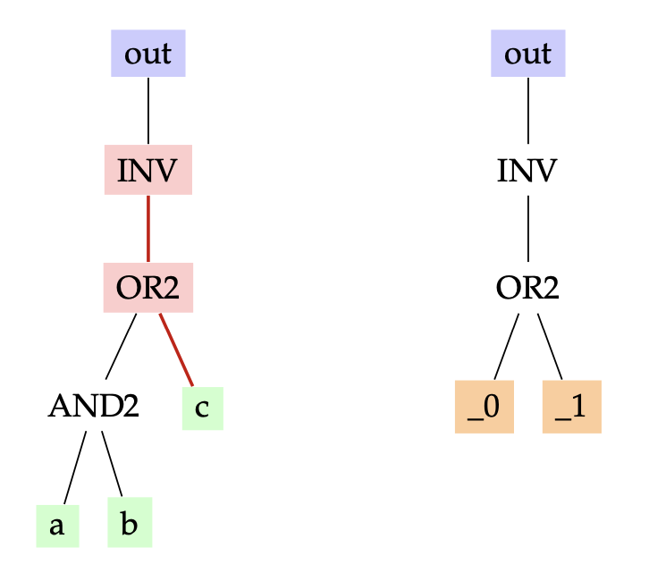
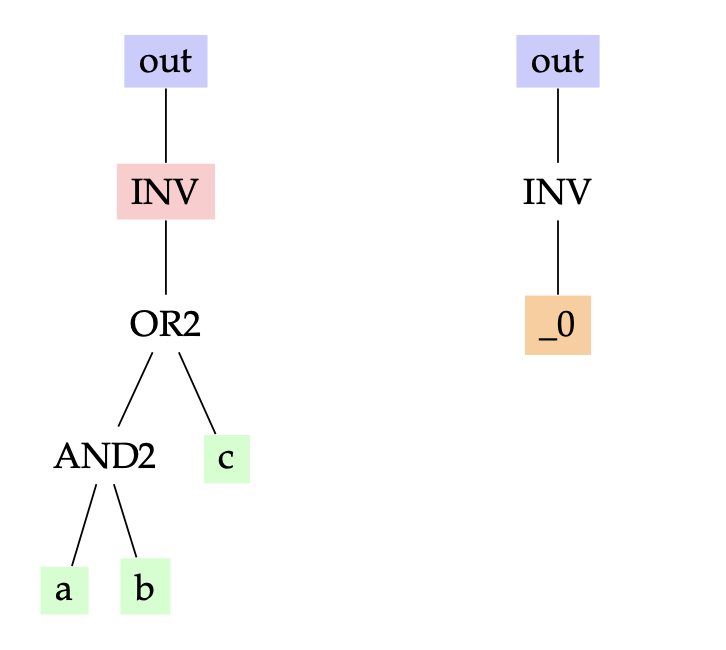

ECE 6745 Lab 3: TinyFlow Front End
In this lab, we will explore the TinyFlow front-end which takes as input a Verilog RTL design and produces a gate-level netlist of standard cells. The complete TinyFlow standard-cell and ASIC design flow is shown below with the front end highlighted in red.

The front end includes two-state RTL simulation, four-state RTL simulation, synthesis, and fast-functional gate-level simulation. In lecture, we discussed an approach to synthesis based on technology mapping with dynamic programming to optimize the area of the final gate-level netlist. In this lab, we will be instead implementing a very simple unoptimized synthesis tool. The three key algorithms in the unoptimized synthesis tool are shown below.

We will be begin by exploring the key data structure used in the synthesis tool: a forest of trees where the nodes are generic gates, standard cells, or signals. We will then explore the verilog reader, implement an unoptimized technology mapping algorithm, use the provided gate-level netlist writer to generate the final Verilog gate-level netlist, and then put these algorithms together into a synthesis tool. Finally, we will go through the entire end-to-end front end flow for a full adder.
1. Logging Into ecelinux
Follow the same process as previous labs. Find a free workstation and log into the workstation using your NetID and standard NetID password. Then complete the following steps. These are the same steps as in the previous lab with one exception. We are now installing the Verilog extension both on the workstation and on the remote server.
- Start VS Code
- Install the Remote-SSH extension, Surfer, and Verilog extensions
- Use View > Command Palette to execute Remote-SSH: Connect Current Window to Host...
- Enter netid@ecelinux-XX.ece.cornell.edu where XX is an ecelinux server number
- Find the Verilog extension again and install on the remote server
- Use View > Explorer to open your home directory on ecelinux
- Use View > Terminal to open a terminal on ecelinux
- Start MS Remote Desktop

Now use the following commands to clone the repo we will be using for today's lab.
% source setup-ece6745.sh
% source setup-gui.sh
% mkdir -p ${HOME}/ece6745
% cd ${HOME}/ece6745
% git clone git@github.com:cornell-ece6745/ece6745-lab3 lab3
% cd lab3
% tree
Your repo contains the following files.
.
├── README.md
├── asic
│ └── build-fa
│ ├── 01-verilator-rtlsim
│ ├── 02-iverilog-rtlsim
│ ├── 03-tinyflow-synth
│ │ └── run.py
│ └── 04-tinyflow-ffglsim
├── rtl
│ ├── FullAdder.v
│ └── test
│ └── FullAdder-test.v
├── stdcells
└── tinyflow
├── synth
│ ├── StdCellFrontEndView.py
│ ├── TinyFrontEndDB.py
│ ├── TinyFrontEndGUI.py
│ ├── print.py
│ ├── substitute.py
│ ├── techmap_unopt.py
│ ├── tinyv.lark
│ └── verilog_parser.py
└── tinyflow-synth
Our front-end flow use the behavioral and front-end views you developed in Project 1, Part A. Copy these views into the lab3 directory.
% cd ${HOME}/ece6745/lab3/stdcells
% cp project1-groupXX/stdcells/stdcells.v .
% cp project1-groupXX/stdcells/stdcells-fe.yml .
where XX is your group number.
To make it easier to cut-and-paste commands from this handout onto the
command line, you can tell Bash to ignore the % character using the
following command:
Now you can cut-and-paste a sequence of commands from this tutorial
document and Bash will not get confused by the % character which begins
each line.
2. Data Structure: Forest of Trees
As discussed in lecture, the synthesis data structure used in our basic front-end is a forest of trees where nodes can be generic gates, standard cells, or signals. The synthesis algorithms create, transform, and analyze this forest of trees. The forest of trees is stored in a front-end database which includes methods for reading files into the databse and writing files from the database. We provide students the database, and students are responsible for writing the algorithms.
To get started, create a build directory and start the TinyFlow synthesis REPL.
% mkdir -p ${HOME}/ece6745/lab3/tinyflow/build
% cd ${HOME}/ece6745/lab3/tinyflow/build
% ../tinyflow-synth
You should see the following:
TinyFlow Synth REPL v0.1
Type 'help()' for available commands.
Type 'clear()' to clear the screen.
Type 'exit()' or Ctrl-D to quit.
tinyflow-synth>
tinyflow-synth> is the TinyFlow synthesis REPL prompt which will enable
you to intereactively experiment with different synthesis data structures
and algorithms. The TinyFlow synthesis REPL is basically the Python REPL
with a few extra features so most standard Python command should work as
well. You can use help() to see the available commands.
2.1. Trees
The nodes in a tree can either be generic gates, standard cells, or
signals. The base class for all nodes is Node.
-
Generic-gate nodes represent generic logic operations. There is no area nor delay associated with a generic logic operation. Generic-gate nodes are named without an X1 suffix (e.g., BUF, NOT, INV, AND2, OR2, XOR, NAND2, NOR2, XNOR2).
-
Standard-cell nodes represent standard cells from our library. The front-end view provides the list of valid standard-cell nodes and the associated area and delay. Standard-cell nodes are named with an X1 suffix (e.g., INVX1, NAND2X1, NOR2X1, AOI21X1).
-
Signal nodes represent input ports and wires. Every leaf of all every tree must be a signal node.
There are also special Wildcard nodes that we will explain later. Let's
start by creating three signals and a simple tree with a total of five
nodes: two generic-gate nodes and three signal nodes.
tinyflow-synth> a = Signal("a")
tinyflow-synth> b = Signal("b")
tinyflow-synth> c = Signal("c")
tinyflow-synth> tree1 = AND2( OR2(a, b), c )
tinyflow-synth> print(tree1)
Note that the TinyFlow REPL will automatically ignore the leading
tinyflow-synth> so you should be able to copy-and-paste the above
commands directly into the REPL.
Every node has a type field and a list of its children. Let's print the
type of every node in the tree.
tinyflow-synth> print(tree1.type)
tinyflow-synth> print(tree1.children[0].type)
tinyflow-synth> print(tree1.children[0].children[0].type)
tinyflow-synth> print(tree1.children[0].children[1].type)
tinyflow-synth> print(tree1.children[1].type)
Each node also has the following helper methods
is_generic_gate()is_standard_cell()is_signal()is_wildcard()
Go ahead and check to see which of the five nodes are generic-gate nodes.
tinyflow-synth> tree1.is_generic_gate()
tinyflow-synth> tree1.children[0].is_generic_gate()
tinyflow-synth> tree1.children[0].children[0].is_generic_gate()
tinyflow-synth> tree1.children[0].children[1].is_generic_gate()
tinyflow-synth> tree1.children[1].is_generic_gate()
The ==/!= operators compare nodes by type. You can also evaluate a
tree using the eval method. So the following will evaluate our tree
when the input ports are set to the given values.
Go ahead and evaluate all input combinations using tree.eval() and
derive the truth table for AND2(OR2(a, b), c). Does it match your
expectations?
Use the TinyFlow REPL to create the following tree.

Evaluate all possible inputs to confirm that it implements the following truth table.
| a | b | c | y |
|---|---|---|---|
| 0 | 0 | 0 | 1 |
| 0 | 0 | 1 | 0 |
| 0 | 1 | 0 | 1 |
| 0 | 1 | 1 | 0 |
| 1 | 0 | 0 | 1 |
| 1 | 0 | 1 | 0 |
| 1 | 1 | 0 | 0 |
| 1 | 1 | 1 | 0 |
2.2. Front-End Database
The front-end database stores a forest of trees. To create a database
using TinyFrontEndDB, we first need to have our front-end view ready.
StdCellFrontEndView loads the front-end view YAML file. It provides
access to cell information (area, timing parameters), patterns for
technology mapping, and standard cell gate classes (INVX1, NAND2X1,
etc.).
Let's create the view and database:
tinyflow-synth> view = StdCellFrontEndView.parse_lib("../../stdcells/stdcells-fe.yml")
tinyflow-synth> db = TinyFrontEndDB(view)
The database supports visualizing its contents through a GUI. Enable the GUI with:
The GUI window will open.
Now add inputs, outputs, and set a tree:
tinyflow-synth> a, b, c = Signal("a"), Signal("b"), Signal("c")
tinyflow-synth> db.add_inports(["a", "b", "c"])
tinyflow-synth> db.add_outports(["out"])
tinyflow-synth> db.set_tree("out", AND2(OR2(a, b), c))
tinyflow-synth> db.get_tree("out")
Watch the GUI update to show your tree when you call db.set_tree(...).

In the visualization above, you will only see primary inputs, primary outputs, and generic gates. The GUI uses the following visual conventions:
- Green ovals: Primary inputs
- Orange ovals: Wire signals
- Blue ovals: Primary outputs
- Grey rectangles: Generic gates
- Red rectangles: Standard cell gates

Add the following tree to the front-end database and verify you can see both the old and new tree in the GUI.
Once you are done with the GUI, you can exit the REPL by calling exit()
or pressing Ctrl-D.
2.2. Printing Trees and Forests
Let's write some functions to print trees and forests. Open the
print.py file in VS Code.
Find the print_tree and print_tree_h functions.
The print_tree function takes as input the front-end database and the
name of the tree to print (i.e., the name of the output port at the root
of the tree) and should print each node in the tree using indentation to
indicate the depth of the node. So printing the AND2(OR2(a, b), c))
tree should output
The print_tree function should get the correct tree from the database
and then call the recursive print_tree_h helper function. The recursive
helper function should use a preorder tree traversal to print the tree:
- Step 1: Print leading spaces based on
indent - Step 2: Print the type for a generic-gate node or the name for a signal node
- Step 3: Recusively call helper function for all children with
indent+1
Once you have finished writing your print_tree function try it out
using the TinyFlow REPL.
tinyflow-synth> view = StdCellFrontEndView.parse_lib("../../stdcells/stdcells-fe.yml")
tinyflow-synth> db = TinyFrontEndDB(view)
tinyflow-synth> a, b, c = Signal("a"), Signal("b"), Signal("c")
tinyflow-synth> db.add_inports(["a", "b", "c"])
tinyflow-synth> db.add_outports(["out"])
tinyflow-synth> db.set_tree("out", AND2(OR2(a, b), c))
tinyflow-synth> print_tree( db, "out" )
Now find the print_forest function.
This function should iterate across all trees in the forest and print
each one using print_tree. Trees are stored as a dictionary in the
database. The dictionary maps the name of the tree (i.e, the name of the
output port or wire) to the actual tree. So you can iterate over the
trees in a front-end database like this.
Once you have finished writing your print_forest function try it out
using the TinyFlow REPL.
tinyflow-synth> view = StdCellFrontEndView.parse_lib("../../stdcells/stdcells-fe.yml")
tinyflow-synth> db = TinyFrontEndDB(view)
tinyflow-synth> a, b, c = Signal("a"), Signal("b"), Signal("c")
tinyflow-synth> db.add_inports(["a", "b", "c"])
tinyflow-synth> db.add_outports(["out1"])
tinyflow-synth> db.set_tree("out1", AND2(OR2(a, b), c))
tinyflow-synth> d, e, f = Signal("d"), Signal("e"), Signal("f")
tinyflow-synth> db.add_inports(["d", "e", "f"])
tinyflow-synth> db.add_outports(["out2"])
tinyflow-synth> db.set_tree("out2", INV(OR2(AND2(a, b), c)))
tinyflow-synth> print_forest(db)
3. Algorithm: Verilog Reader
The first step of our synthesis flow is reading the Verilog RTL design to create the forest of trees data structure. This has three steps: lexing, parsing, and foresting.
In this part, we will be discussing the limitations of verilog we can write for the TinyFlow. This limitation is mainly pedagogical to simplify the flow as well as limitations due to our parser. First let's look at the full adder we will be using as the motivation example in his lab.
The full adder adheres to the following rules.
- Only combinational Verilog
- Only single-bit signals of type
wire - Only single-bit bitwise operators (
&,|,^,~) - No hierarchy
Take a look at the Lark grammar which captures these rules.
The grammer is shown below.
start: module
//------------------------------------------------------------------------
// Module
//------------------------------------------------------------------------
module: "module" MNAME port_decl_list? ";" stmt* "endmodule"
port_decl_list: "(" port_decl ("," port_decl)* ")"
port_decl: DIR ("wire" | "logic")? SIGNAL
DIR: "input" | "output"
stmt: decl_wire | assignment
//------------------------------------------------------------------------
// Statements
//------------------------------------------------------------------------
decl_wire: "wire" SIGNAL ("," SIGNAL)* ";"
assignment: "assign" SIGNAL "=" expr ";"
//------------------------------------------------------------------------
// Expressions
//------------------------------------------------------------------------
?expr:
| expr "|" expr -> or
| expr "^" expr -> xor
| expr "&" expr -> and
| expr "+" expr -> sum
| "~" expr -> not
| "(" expr ")"
| SIGNAL
//------------------------------------------------------------------------
// Terminals
//------------------------------------------------------------------------
SIGNAL: /[a-zA-Z_][a-zA-Z0-9_]*/
MNAME: /[a-zA-Z_][a-zA-Z0-9_]*/
The front-end database includes a parse_verilog method which will
perform lexing and parsing for a Verilog RTL design before displaying the
AST.
tinyflow-synth> view = StdCellFrontEndView.parse_lib("../../stdcells/stdcells-fe.yml")
tinyflow-synth> db = TinyFrontEndDB(view)
tinyflow-synth> db.parse_verilog("../../rtl/FullAdder.v")
Try to see how the AST corresponds to the Verilog RTL design. Now let's
use the read_verilog method to do all three steps: lexing, parsing, and
foresting. Watch the GUI update to show the parsed trees.
4. Algorithm: Unoptimized Technology Mapping
Our unoptimized technology mapping algorithm will be very simple. It will replace every generic gate with a logically equivalent subtree of standard cells. We will not be trying to optimize area. We are simply trying to develop the most basic possible technology mapping algorithm.
We will develop a subtree substitution framework which we can then use to implement the unoptimized technology mapping algorithm. You can also use this subtree substitution framework to implement canoncalization and optimized technology mapping in the project. The subtree substitution framework will enable us to create a substitute like this:
Once we have created a substitute we can apply to a tree. So applying
the above subsittute would find every AND2 generig cate and replace it
with a new INV/NAND2 subtree. Substitutes make use of wildcard nodes
which are denoted using _0, _1, _2, and _3. A wildcard node will
matches any subtree.
So let's say we start with the tree on the left and we want to apply the above substitute to create the tree on the right.

Our goal is to be able to do this as follows.
tinyflow-synth> a, b, c = Signal("a"), Signal("b"), Signal("c")
tinyflow-synth> sub = Substitute(find=AND2(_0, _1), replace=INV(NAND2(_0, _1)))
tinyflow-synth> result = sub.apply(AND2(OR2(a, b), c))
tinyflow-synth> print(result)
This is pretty complicated to implement, so we will take an incremental approach. We will start by implementing an exact match algorithm before implementing a partial match algorithm. Then we will work on capturing the wildcard subtrees from a partial match. We will implement the actual replacement before finalyl creating a substitution. Then we can use this to implement the unoptimized technology mapping.
4.1. Exactly Matching Trees
Our first step is to implement an exact match algorithm. Our earlier work on printing trees only traversed a single tree. Here we will need to recurse two trees in parallel to see if they match exactly.
Open the substitute.py file in VS Code.
Find the match_exact function in substitute.py.
This recursive function takes as input two nodes in two trees and compares the corresponding subtrees starting from these two nodes using the following steps.
-
Base Case: If the nodes are not equal return false
-
Recursive Case: Recursively call function for all children, keep track if any children return false and if so then this function should return false, otherwise return true
You can use the Python zip function to easily iterate over the children
of both nodes together like this:
for p_child, n_child in zip( p_node.children, node.children ):
... do something with p_child and n_child ...
Once you have implemented your exact match algorithm, try it out using the TinyFlow REPL.
tinyflow-synth> a, b, c = Signal("a"), Signal("b"), Signal("c")
tinyflow-synth> match_exact( AND2(OR2(a,b), c), AND2(OR2(a,b), c) )
tinyflow-synth> match_exact( AND2(OR2(a,b), c), OR2(AND2(a,b), c) )
tinyflow-synth> match_exact( AND2(OR2(a,b), c), AND2(a,b) )
4.2. Partially Matching Trees
Now that we know how to recursively traverse two trees in parallel, let's
implement a partial match algorithm. Here is where we will start to take
advantage of wildcards. A wildcard matches any subtree. The REPL provides
predefined wildcards _0, _1, _2, _3 for convenience. For example,
if we have the tree below on the left, we want to be able to determine
that the pattern on the right matches since there is an AND2 gate at the
root of the tree on the left.



Find the match function in substitute.py.
This recursive function takes as input two nodes in two trees. The
p_node tree is the pattern tree (i.e., the tree with wildcards) while
the node tree is the tree want want to search over. The function
compares the corresponding subtrees starting from these two nodes using
the following steps.
-
Base Case 1: If the current
p_nodeis a wildcard (i.e.,is_wildcard()returns true) then it always matches the correspondingnodeso return true. -
Base Case 2: If the current
p_nodedoes not equal the currentnode(i.e., use!=which compares the types of the two nodes) then there is no match so return false. -
Recursive Case: Recursively call function for all children, keep track if any children return false and if so then this function should return false, otherwise return true
Test your implementation in the REPL:
tinyflow-synth> a, b, c = Signal("a"), Signal("b"), Signal("c")
tinyflow-synth> match( AND2(OR2(a,b), c), AND2(OR2(_0,_1), _2) )
tinyflow-synth> match( AND2(OR2(a,b), c), OR2(AND2(_0,_1), _2) )
tinyflow-synth> match( AND2(OR2(a,b), c), AND2(_0,_1) )
tinyflow-synth> match( INV(OR2(AND2(a,b), c)), INV(OR2(_0,_1)) )
tinyflow-synth> match( INV(OR2(AND2(a,b), c)), INV(_0) )
Notice how the final three matches should return true since the pattern partially matches the given tree.
4.3. Capturing Wildcard Subtrees
Now that we can recursively compare two trees, we want to also capture
whatever the wildcards in the pattern tree match to. So in the following
example, wildcard _0 captures the OR(a,b) subtree and wildcard _1
captures the c signal node.
The captures should be a dictionary mapping the wildcard name to the
subtree it matched. For example, matching AND2(OR2(a, b), c) against
pattern AND2(_0, _1) produces {"_0": OR2(a, b), "_1": c}.
Find the capture function in substitute.py.
This recursive function takes as input two nodes in two trees. The
p_node tree is the pattern tree (i.e., the tree with wildcards) while
the node tree is the tree want want to search over. The capture
algorithm can assume we have already used the match algorithm to
confirm there is indeed a partial match. The function compares the
corresponding subtrees starting from these two nodes using the following
steps.
-
Base Case: If the current
p_nodeis a wildcard (i.e.,is_wildcard()returns true) then we want to capture the corresponding subtree starting atnode. Return a new dictionary that maps the wild card name (i.e.,p_node.name) tonode. -
Recursive Case: Recursively call function for all children, keep a running dictionary and merge in the dictionary returned from each recursive function call. You can use the
|=operator to merge a new dictionary into an existing dictionary.
Test your implementation in the REPL:
tinyflow-synth> a, b, c = Signal("a"), Signal("b"), Signal("c")
tinyflow-synth> capture( AND2(OR2(a,b), c), AND2(_0,_1) )
tinyflow-synth> capture( INV(OR2(AND2(a,b), c)), INV(OR2(_0,_1)) )
tinyflow-synth> capture( INV(OR2(AND2(a,b), c)), INV(_0) )
4.4. Replacing Trees
Now that we can match and capture subtrees, we want to build a new tree
using the captured subtrees. Find the replace function in
substitute.py.
This recursive function takes as input a node in the template tree and the captures. The tempalte tree is the tree that we want to insert the captured subtrees. The function should use the following steps.
-
Base Case: If the current
t_nodeis a wildcard (i.e.,is_wildcard()returns true) then we want to insert the corresponding captured subtree at this point. So all we need to do is look up the wildcard in the captures dictionary (i.e.,captures[t_node.name]) and return the result. -
Recursive Case: Recursively call function for all children and append the subtree returned from each recursive function call to running list of new children. Once you have finished iterating over all of the children create a copy of the current
t_nodeusing the list of children (e.g.,type(t_node)(*children)). Return this new node.
Test your implementation in the REPL:
tinyflow-synth> a, b, c = Signal("a"), Signal("b"), Signal("c")
tinyflow-synth> n = AND2(OR2(a, b), c)
tinyflow-synth> p = AND2(_a, _b)
tinyflow-synth> t = INV(NAND2(_a, _b))
tinyflow-synth> captures = capture(n, p)
tinyflow-synth> replace(t, captures)
4.5. Substitutions
Now that we have implemented match (to check if a tree matches a
pattern), capture (to extract the subtrees that wildcards match), and
replace (to build a new tree using captured subtrees), we have the core
implementation for the substitution framework.
The Substitute class is a container that holds a find pattern and a
replace template. Find the Substitute class in substitute.py. Go
ahead and implement the apply method which combines match, capture,
and replace:
The basic approach is:
- use the match function to see if there is match between the given node and the stored find pattern
- if there is a match, then use the capture function to capture the wildcard subtrees, and the replace these captures
Test your implementation in the REPL:
tinyflow-synth> a, b, c = Signal("a"), Signal("b"), Signal("c")
tinyflow-synth> sub = Substitute(find=AND2(_a, _b), replace=INV(NAND2(_a, _b)))
tinyflow-synth> result = sub.apply(AND2(OR2(a, b), c))
tinyflow-synth> print(result)
4.6. Unoptimized Technology Mapping
Now we can use our substitution framework to implement unoptimized technology mapping where we replace each generic gate with a corresponding standard cell. For example, to map AND2 to NAND2X1 + INVX1:
Note that you can access standard cell classes directly from the view
using view.INVX1, view.NAND2X1, etc.
Implement techmap_unopt in synth/techmap_unopt.py. The function takes
the database and view as arguments:
First, we will need to define substitution rules for each generic gate type. Just focus on the gates we need for the full adder: AND2, OR2, NOT.
rules = [
Substitute(find=AND2(_0, _1), replace=view.INVX1(view.NAND2X1(_0, _1))),
Substitute(find=OR2(_0, _1), replace=...),
Substitute(find=NOT(_0), replace=...),
]
Next, implement an apply_rules helper function that recursively applies
rules bottom-up. The key insight is that we must transform children first
before transforming the current node. This ensures that when we match a
pattern at a node, its children have already been mapped to standard
cells. The function should: (1) return immediately for Signal nodes (base
case), (2) recursively apply rules to all children first, (3) iterate
through all rules and try each one on the current node -- return the
result as soon as a rule matches (first match wins), (4) return the node
unchanged if no rules match.
Finally, iterate through all trees in the database and apply the rules:
for name in list(db.trees.keys()):
tree = db.get_tree(name)
new_tree = apply_rules(tree)
db.set_tree(name, new_tree)
Test your implementation with the REPL and GUI. After running techmap, the grey generic gates should become red standard cell gates:
tinyflow-synth> view = StdCellFrontEndView.parse_lib("../../stdcells/stdcells-fe.yml")
tinyflow-synth> db = TinyFrontEndDB(view)
tinyflow-synth> db.enable_gui()
tinyflow-synth> db.read_verilog("../../rtl/FullAdder.v")
tinyflow-synth> techmap_unopt(db, view)
5. Algorithm: Gate-Level Netlist Writer
We provide you a gate-level netlist writer which will write a forest of trees of standard-cell nodes to a Verilog file. You can try it out like this.
tinyflow-synth> view = StdCellFrontEndView.parse_lib("../../stdcells/stdcells-fe.yml")
tinyflow-synth> db = TinyFrontEndDB(view)
tinyflow-synth> a, b, c = Signal("a"), Signal("b"), Signal("c")
tinyflow-synth> db.add_inports(["a", "b", "c"])
tinyflow-synth> db.add_outports(["out1"])
tinyflow-synth> db.set_tree("out1", view.NAND2X1(view.NOR2X1(a, b), c))
tinyflow-synth> db.write_verilog("test.v")
tinyflow-synth> exit()
Now take a look at the generated Verilog gate-level netlist.
6. TinyFlow Front End
As discussed in lecture, the front end is more than just synthesis. The front-end flow consists of four stages: two-state simulation, four-state simulation, synthesis, and fast-functional gate-level simulation. As paranoid ASIC engineers, we verify our design at each step. We simulate the RTL before synthesis to catch design bugs early, then simulate the gate-level netlist after synthesis to ensure the transformation preserved functionality.
4.1 Two-State RTL Simulation
To ensure functionality, the first step is to verify our design quickly using two-state simulation. Two-state simulation tests only logic values 1 and 0 to ensure basic logic correctness. In this part we will use Verilator to perform two-state simulation.
In this lab we will verify a Full Adder design. We provide the Verilog
RTL in rtl/FullAdder.v and a basic testbench in
rtl/test/FullAdder-test.v. Take a look at both files to understand the
design and test structure.
Now run the two-state simulation with Verilator:
% cd $HOME/ece6745/lab3/asic/build-fa/01-verilator-rtlsim
% verilator --top Top --timing --binary -o FullAdder-test \
../../../rtl/FullAdder.v \
../../../rtl/test/FullAdder-test.v
% ./obj_dir/FullAdder-test
As discussed in lecture, two-state simulation has a limitation: unassigned signals default to 0. This can hide bugs in your design. For example, if you forget to assign an output, two-state simulation will silently use 0 instead of flagging an error.
Try this experiment: comment out the assign g = a & b; line in your
Full Adder and re-run the simulation. Notice that g silently takes the
value 0 instead of producing an error. This is why we need four-state
simulation in the next step. Change the code back before continuing.
4.2 Four-State RTL Simulation
Four-state simulation uses four logic values: 0, 1, X (unknown), and Z (high impedance). You get X when a signal is uninitialized, when multiple drivers are fighting (contention), or through propagation of uncertainty (X propagates through logic). You get Z when a wire is floating (nothing is driving it) or from a tri-stated output.
We use four-state simulation to capture these bugs. It is slower than two-state simulation, but it narrows down our issue search space. If your design passes two-state but fails four-state, the problem is usually related to X propagation or uninitialized signals.
Go ahead and run the four-state simulation with Icarus Verilog:
% cd $HOME/ece6745/lab3/asic/build-fa/02-iverilog-rtlsim
% iverilog -g2012 -o FullAdder-test \
../../../rtl/FullAdder.v \
../../../rtl/test/FullAdder-test.v
% ./FullAdder-test
Now try the same experiment: comment out the assign g = a & b; line and
re-run the simulation. This time you should see the simulation catch the
error because g becomes X instead of silently defaulting to 0. Change
the code back before continuing.
4.3 Synthesis
Now that we have rigorously tested our Verilog design, we are ready to
synthesize it into a gate-level netlist. For this step, we will use the
batch processing mode of tinyflow-synth instead of the REPL mode we
have previous used. The batch mode takes a run script that describes the
synthesis steps.
Go ahead and edit the run script:
Populate the script with the commands to perform technology mapping:
view = StdCellFrontEndView.parse_lib("../../../stdcells/stdcells-fe.yml")
db = TinyFrontEndDB(view)
db.read_verilog("../../../rtl/FullAdder.v")
techmap_unopt(db, view)
db.write_verilog("post-synth.v")
Now run the synthesis:
% cd $HOME/ece6745/lab3/asic/build-fa/03-tinyflow-synth
% ../../../tinyflow/tinyflow-synth -f run.py
This outputs the post-synth.v file. Open it and have a look. You should
see that all gates are now standard cells from your library, and the
module still has the same inputs and outputs as the original RTL.
4.4 Fast-Functional Gate-Level Simulation
Now that we have our synthesized design, as paranoid ASIC engineers we want to double check that the synthesized design still does what we intended. Synthesis tools may not always be correct! To verify this, we perform fast-functional gate-level simulation (FFGL), which is four-state simulation using the same testbench but with the synthesized design and the behavioral view of the standard cells.
% cd $HOME/ece6745/lab3/asic/build-fa/04-iverilog-ffglsim
% iverilog -g2012 -o FullAdder-test \
../../../stdcells/stdcells.v ../03-tinyflow-synth/post-synth.v \
../../../rtl/test/FullAdder-test.v
% ./FullAdder-test
If the simulation passes, your synthesized design is functionally correct.